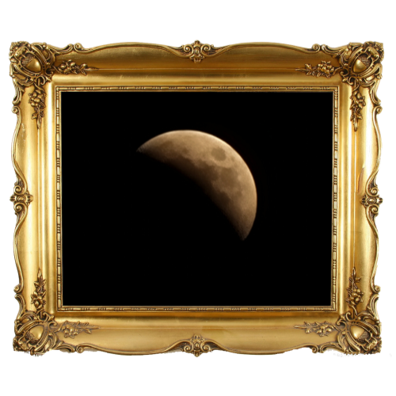

제 2회 별조각 사진전시회
별조각 사진전시회에 오신 것을 환영합니다.
해당 사진을 클릭하면 사진 제목 및 설명을 보실수 있습니다.

1등 이현승
2등 김지원

3등 안신현
제 2회 별조각 사진전시회
별조각 사진전시회에 오신 것을 환영합니다.
해당 사진을 클릭하면 사진 제목 및 설명을 보실수 있습니다.
1등 이현승
2등 김지원
3등 안신현

순위
사진 제목
사진 설명